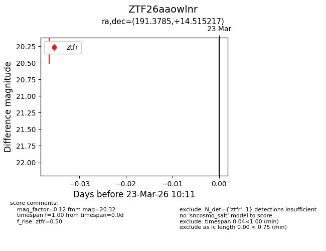
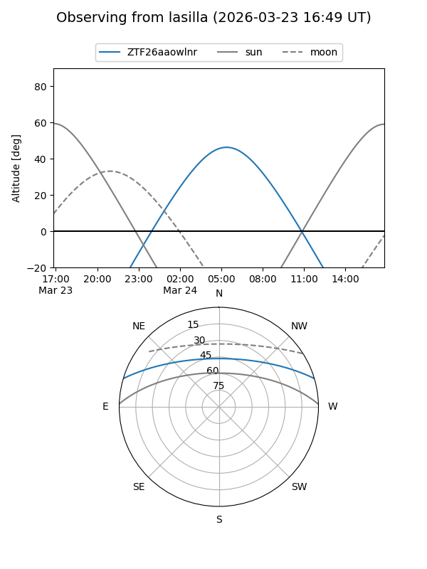
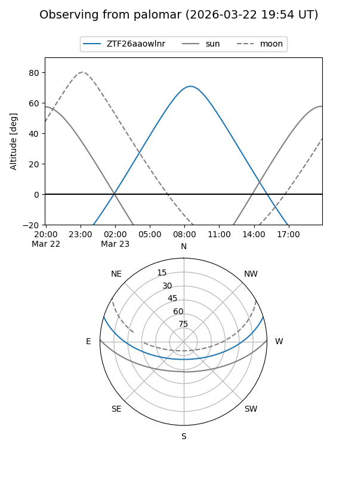

ZTF26aaowlnr
Target ZTF26aaowlnr at 2026-03-23 10:13
Aliases and brokers:
FINK: link
Lasair: link
ALeRCE: link
alt names
ZTF26aaowlnr (ztf,fink_ztf)
Coordinates:
equatorial (ra, dec) = 191.3785,+14.51522
equatorial (HMS+DMS) = 12:45:30.84,+14:30:54.78
galactic (l, b) = (296.3912,+77.31167)
Flags:
Photometry:
last ztfr=20.32
1 ztfr detections
Lightcurve

Visibility


Additional plots